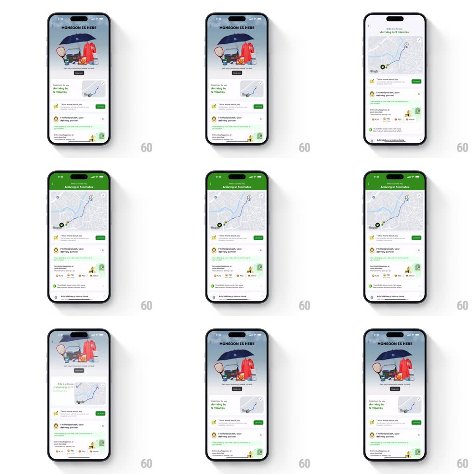

Media
Frame-by-frame

Rebuild this animation 1:1: Blinkit's order-tracking map expansion - the small "Arriving in 5 minutes" map card morphs seamlessly into a full-width detailed tracking view with route polyline and rider marker, then collapses back.

Rebuild this animation 1:1: Blinkit's order-tracking map expansion - the small "Arriving in 5 minutes" map card morphs seamlessly into a full-width detailed tracking view with route polyline and rider marker, then collapses back.
## Integration
Integration: stack-agnostic spec - springs given as stiffness/damping, timed motions as duration + curve; map every value to your framework and animation library of choice.
## Scene
Order status screen: "MONSOON IS HERE" illustrated banner, an "Arriving in 5 minutes" row with a small map thumbnail, delivery-partner chat card, checklist rows. Expanded state: full-width map with a green route polyline, origin/destination pins, and the status header pinned above.
## Motion spec
Pattern: shared-element map card expansion.
- Tap the map thumbnail: the thumbnail scales/translates from its card slot to the full-width map slot (spring ~300/26, ~450ms) - corner radius animates 12px -> 0, and the map canvas crossfades from static preview to live detailed tiles mid-transition.
- The route polyline draws in after landing (500ms, following the path), then the rider marker pulses (ring scale 1 -> 1.6 fade, 1.5s loop).
- Content below the card (chat card, checklist) slides down out of the way on expand (300ms, matching the spring) and slides back on collapse.
- Tap collapse/back: reverse morph (400ms), polyline erases quickly (200ms) as the card shrinks.
- The status header text ("Arriving in 5 minutes") stays mounted and crossfades position between the two layouts (250ms).
## Calibration
- The map never jumps or reloads mid-morph - preview and live tiles must align geographically.
- Header and map travel together; the rest of the screen just gets out of the way.
## Reduced motion
Expand/collapse crossfades between the two layouts.
## Don't miss
- Green is the tracking accent: header strip, polyline, and rider marker share it.
- The banner illustration stays put - only the map region morphs.